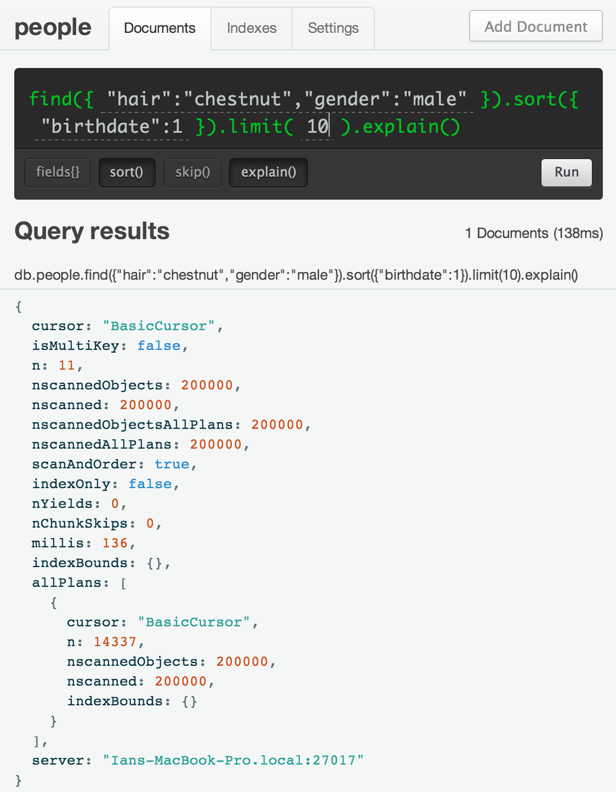

explain.explain() - Understanding Mongo Query Behavior
MongoDB has an extremely flexible query syntax. The flexibility allows all sorts of useful queries, and some that are mysteriously slow. It’s reasonably easy to figure out why a query is slow … you simply need to ask MongoDB to explain itself.
.explain() yourself mongo
By simply adding .explain() to the end of your mongo query, mongo will return details about how it goes about fulfilling that query. This will help you understand what indexes are being used and how many documents mongo actually sifts through to generate the result.
a contrived example
First, let’s generate a dataset… how about some people. Running the following code right in the mongo shell will create us 200k person objects to work with, each with their own birthdate, gender, and hair color. No indexes have been created (yet).
<code data-language="javascript">var genderChoices = ['male', 'female'];
var hairChoices = ['black', 'brown', 'blond', 'red', 'auburn',
'chestnut', 'white'];
var birthdate = new Date();
birthdate.setYear(1970);
for (var i = 0; i < 200000; ++i) {
birthdate.setHours(birthdate.getHours() + 1);
db.people.insert({
gender: genderChoices[Math.floor(Math.random() *
genderChoices.length)],
hair: hairChoices[Math.floor(Math.random() * hairChoices.length)],
birthdate: birthdate
})
}
go unindexed query!
Let’s filter down to the first 10 males with a tasteful chestnut hair color and sort them by birthdate. I’ll use the pretty web interface.
Performance is already pretty bad on this query. With only 200k documents, our query takes over 100ms (which is bad enough to automatically get logged by MongoDB as a slow query).
Notice also, the cursor is a BasicCursor which means that no index was used.
The killer information that you should look for is the number of objects MongoDB scanned through fulfilling this query. I inserted 200k documents, and well, the nscanned value tells us we’re searching through every single document.
For sorted queries, also pay attention to scanAndOrder which when true means that MongoDB spent time sorting the results instead of using an index.
index race
Just for example, I’m going to add two separate indexes: one on hair and one on gender. Again, I’ll use the pretty web interface.
be careful adding indexes to production data
With an index on hair, and a separate index on gender, let’s run the query again.
I’m cutting off part of this explain() result for later, but first look at the cursor value.
The cursor is BtreeCursor hair_1 which says we’re using an index on hair. Mongo only needed to scan through 28.5k documents to complete the query. But why use the hair index?
a DB with a plan
Here is the next part of the explain output:
This shows that MongoDB tried 3 ways to fulfil my query. It tried using the hair index, the gender index, and no indexing. The poor gender and BasicCursor options only scanned through about 200 documents before MongoDB terminated them (because it already had the answer from the hair index).
So, we did better by adding the hair index. If this is the only query we ever run against our data, then the gender index isn’t helping (and actually slows down updates/inserts/deletes to maintain the index).
Looking back at the hair index, the nscanned tells us that MongoDB scanned 28.5k documents and generated a result of 14k documents that pass the query.
28.5k is about 15% of our total data, which is a nice reduction. We can do better though with a compound index which will bring the nscanned value closer to the total result set.
better, stronger, faster
Let’s create an index on hair, gender, and then birthdate. We’re choosing hair first because that’s the most efficient at breaking apart our data into smaller fragments (which is why MongoDB chose it in our index race above).
How does it perform?
The results are much faster, and in this optimal case, our nscanned is equal to n and scanAndOrder is false. Good job contrived example. You show us what we can aspire to.
Explain yourself
Explain is a great tool to understand a little more about how your query is actually working with your indexes, and with MongoHQ it’s a single pretty button away from helping you.